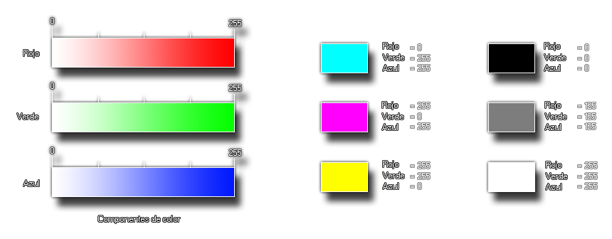

Devuelve un color basándose en los valores de rojo,
verde y azul
Sintaxis
make_colour_rgb(r, g, b);
Argumentos
| Argumento | Descripción |
|---|---|
| r | El componente rojo del color. |
| g | El componente verde del color. |
| b | El componente azul del color. |
Descripción
Esta función permite crear un color a partir de tres
componentes: El rojo, verde y azul del color. Estos tres valores son
números del 0 al 255 (más información:
Anexo: Manejo de colores). A
continuación una imagen ilustrativa:
El esquema de la izquierda representa el papel que cumple cada uno de los componentes individuales, y las imágenes de la derecha son ejemplos que muestran cómo varía el resultado final a partir de variar cada componente.

El esquema de la izquierda representa el papel que cumple cada uno de los componentes individuales, y las imágenes de la derecha son ejemplos que muestran cómo varía el resultado final a partir de variar cada componente.
Devuelve
Número real (entero).
Ejemplo
var color = make_colour_hsv(100, 141, 330)Se crea un color con las componentes HSV dadas y se almacena en la variable local
color.